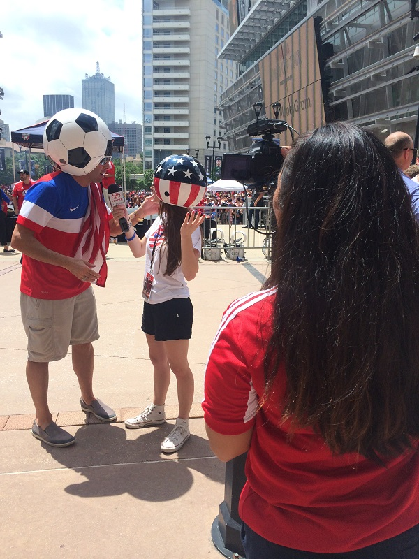

Work
On-Camera:
Writing: FC Dallas
1. There’s a new sheriff in town and his name is Matt Hedges. At the beginning of the 2014 season, head coach Oscar Pareja named Andrew Jacobson team captain, but when the midfielder went down to injury early in the campaign, Pareja turned to Hedges for the captain's armband. [Click here to continue reading]
2. If you come out to Saturday night's Houston Dash women's game and you're wondering why the two opposing coaches look like they're related, it's because they are. [Click here to continue reading]
3. Before Wednesday's big game between FCD and Aston Villa, FC Dallas supporters faced off against AVFC supporters in a friendly soccer game in the blistering heat... [Click here to continue reading]
4. Next article... [Click here to continue reading]
5. Next article... [Click here to continue reading]
6. Next article... [Click here to continue reading]
7. Next article... [Click here to continue reading]
8. Next article... [Click here to continue reading]
9. Next article... [Click here to continue reading]